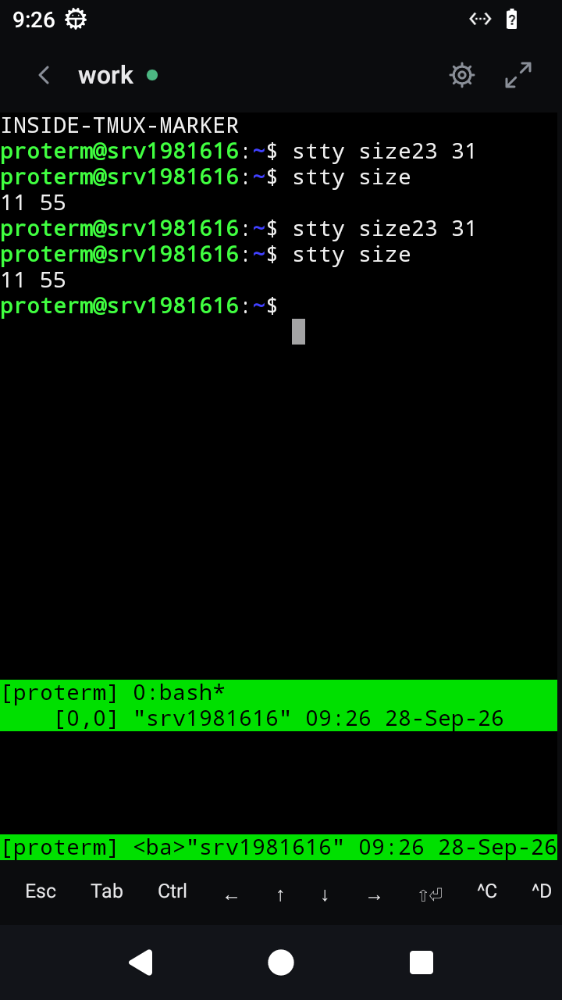
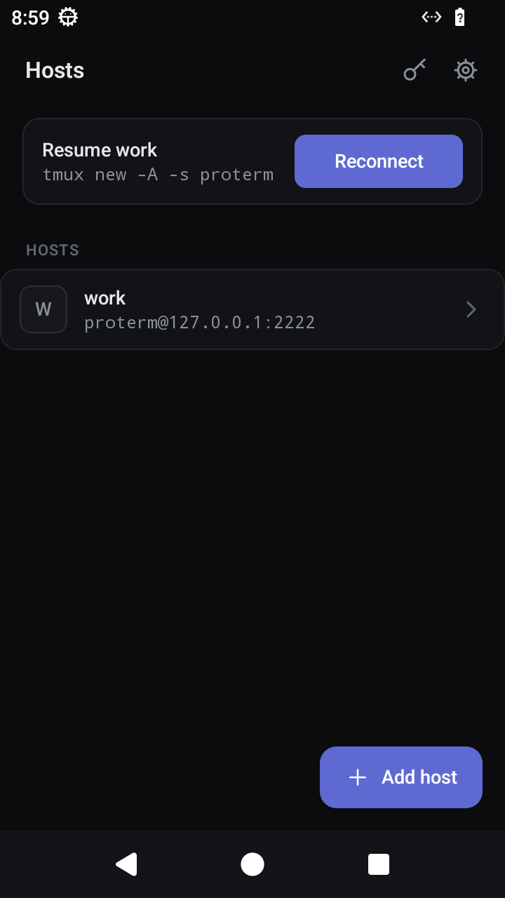
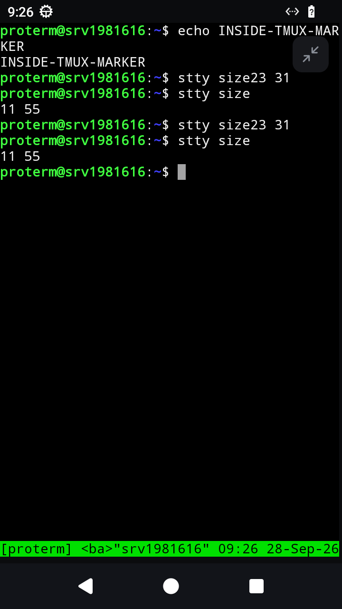
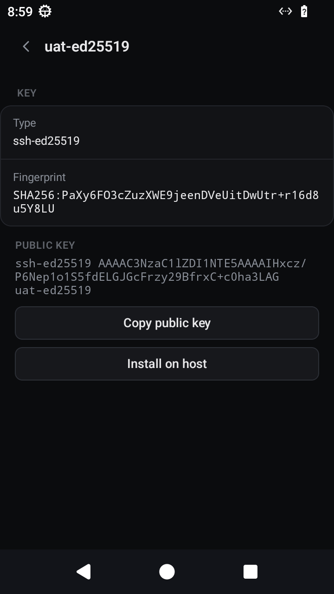
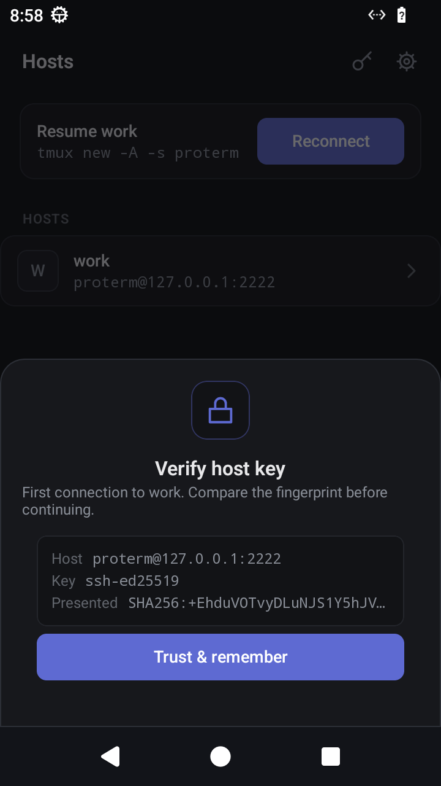
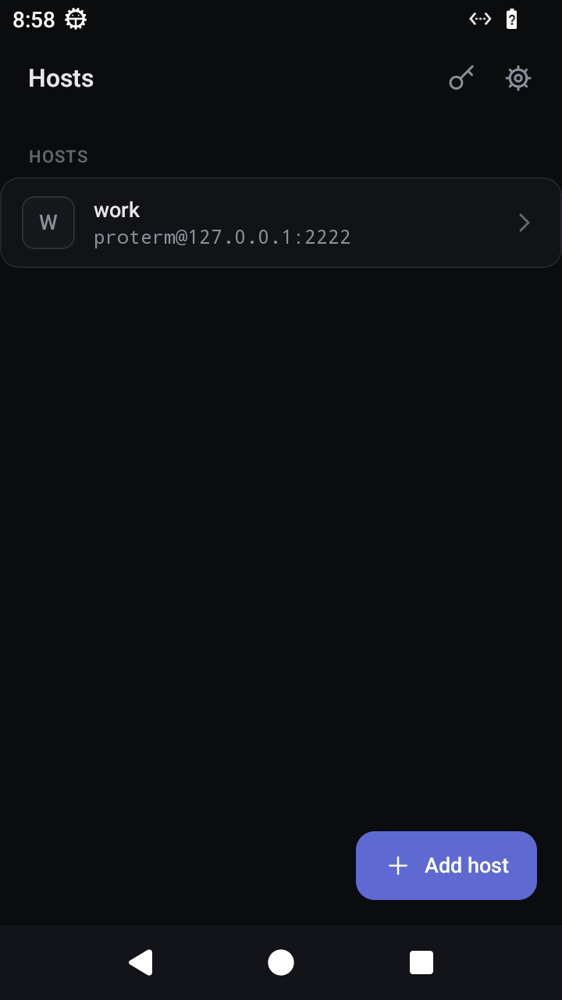

Bitlane · first product
ProTerm Your agents, from your phone.
An SSH client and terminal for Android, built to run AI coding agents from your phone. Start Claude Code, Codex, opencode or Gemini CLI on the machine you already control, then leave your desk and drive the agent from your pocket. ProTerm is the window; tmux on the remote keeps the session alive.

What it does
A real terminal, rebuilt for agent work
Everything you need to connect properly, and nothing that gets in the way.
SSH client and terminal, done properly
- A real terminal emulator (libvterm), not a text box — vim, htop, tmux and full-screen agent TUIs render correctly.
- Password and public-key login (Ed25519), saved hosts, and .ssh/config import.
- Trust-on-first-use host key verification, with a blocking warning if a known host's key ever changes.
- Adjustable font size; System / Dark / Light theme; rotation reflows cleanly and keeps your scrollback.
Built for AI coding agents
- Compose multi-line prompts with an accessory key bar: Esc, Tab, Ctrl, arrows and Shift+Enter.
- Run Claude Code, Codex, opencode, Gemini CLI or any TUI inside tmux on the remote.
- One-tap resume: kill the app, reopen, and reconnect straight into the running session.
- Durability comes from tmux on the host — no background process, no wake locks, no battery drain.
Connect without the chore
- Save hosts with a tap; the host list is the home screen.
- Generate an Ed25519 key in the app, or import an existing OpenSSH private key.
- Install your public key on a host in one tap, and never type that password again.
- Optional startup command per host, e.g. tmux new -A -s proterm.
Private by default
- Passwords and keys are encrypted on device (AES-GCM, Android Keystore) and stay on your phone.
- Install and connect — there is nothing to sign up for, and nothing is tracked.
- Free to use.
Screenshots
From your pocket, into the session
ProTerm talks SSH to the machines you already control. Bring your own server, your own keys, your own agents.





Privacy
No account. No tracking. No data collected.
ProTerm has no servers of its own, no analytics and no ads. Your passwords and keys are encrypted on your device and never leave it except in an SSH connection you start. The full policy is short and worth reading.